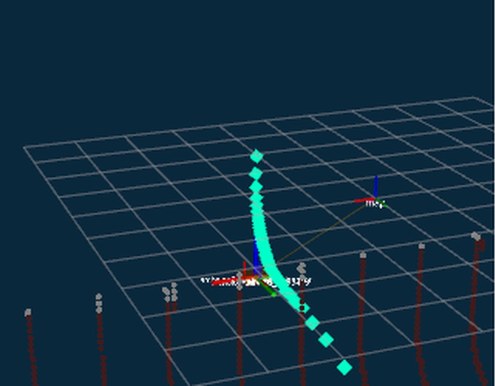
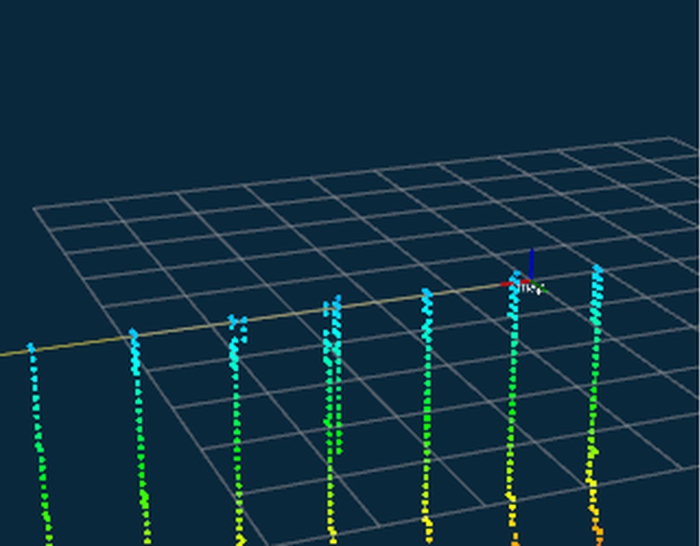
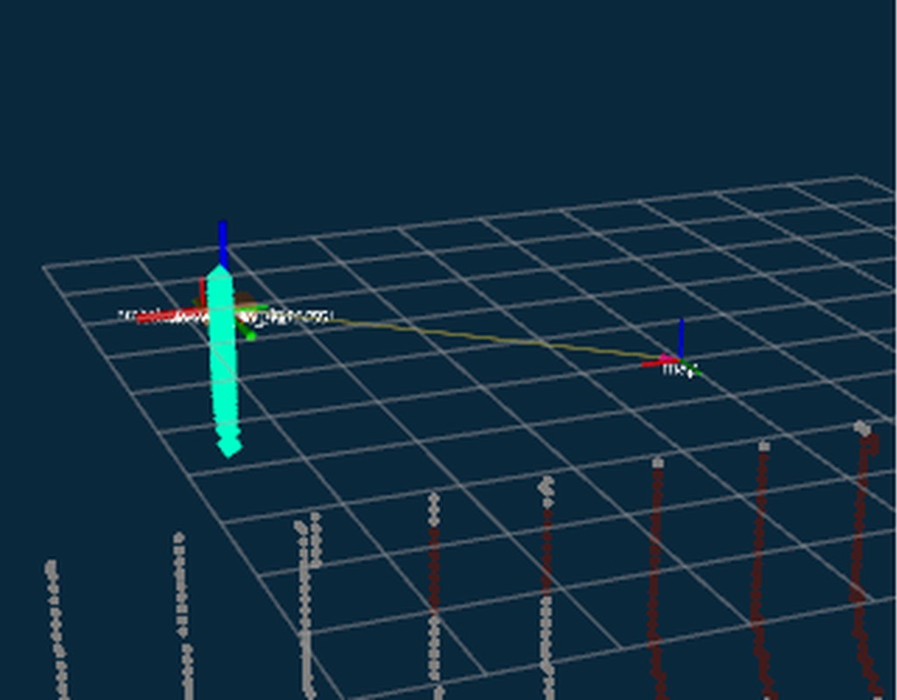
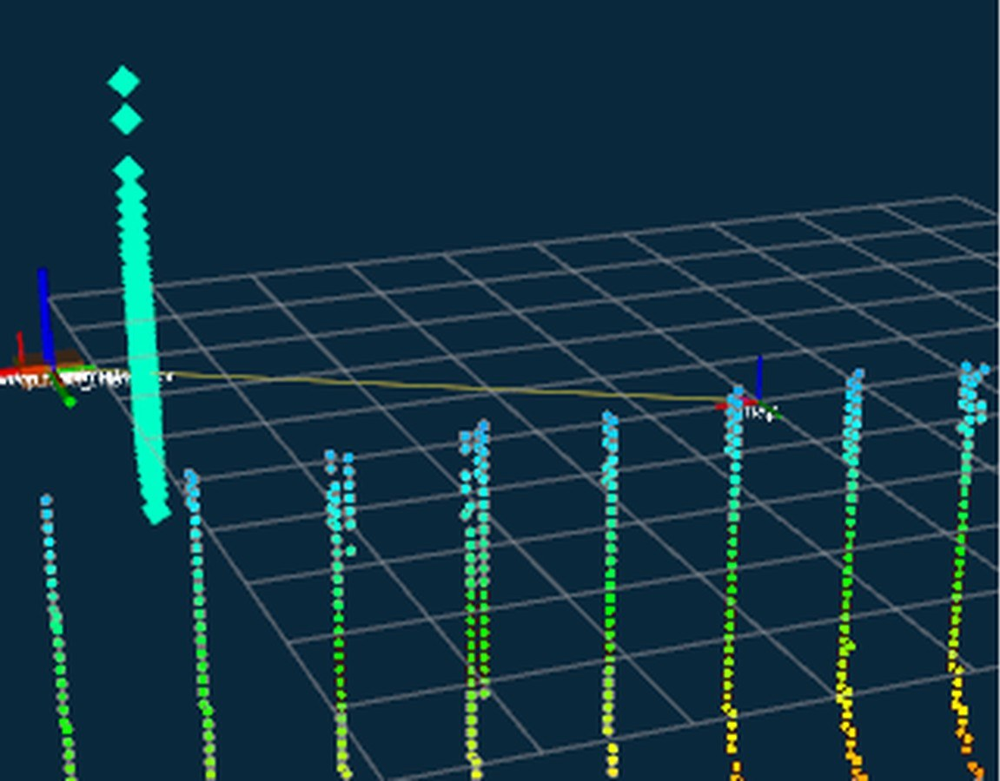

01
Mapping without the most expensive sensor on the vehicle
Archenaux Robotics · Primary engineer, sensor simulation and SLAM back end · 45 commits

A Doppler Velocity Log costs $8,710 and was the single most expensive item in the sensor budget, roughly four times the sonar and seventeen times the IMU. I helped validate that it is not required.
An IMU, a 2D mechanical scanning sonar, the known contour of the structure, and loop closure together produce a metrically accurate map. The back end is GTSAM iSAM2 with corner-based loop closure and GICP registration.
The interesting failure was that the graph diverged whenever a closure fired, which is the failure mode that makes a factor graph worse than dead reckoning. Separately, the registration acceptance threshold shipped at 0.15 and admitted bad matches. Raising it to 0.6 after characterizing the score distribution made the pipeline drift-free without tuning.
These numbers are from the Bremen MSS real-pool dataset, not the simulator. I also characterized the IMU that feeds it: a 30-minute stationary log, 321k samples, Allan variance, and Kalibr noise parameters. The first attempt was contaminated by a nearby speaker coupling into the MEMS accelerometer, which is the kind of thing you only find by looking at the FFT.
- Trajectory error
- 1.62 m
- vs 5.04 m, real pool data
- Wall RMSE
- 0.08 m
- Cost removed
- $8,710
- Gyro ARW
- 0.26 °/√hr
- measured, 321k samples



Private repository. Details on request.